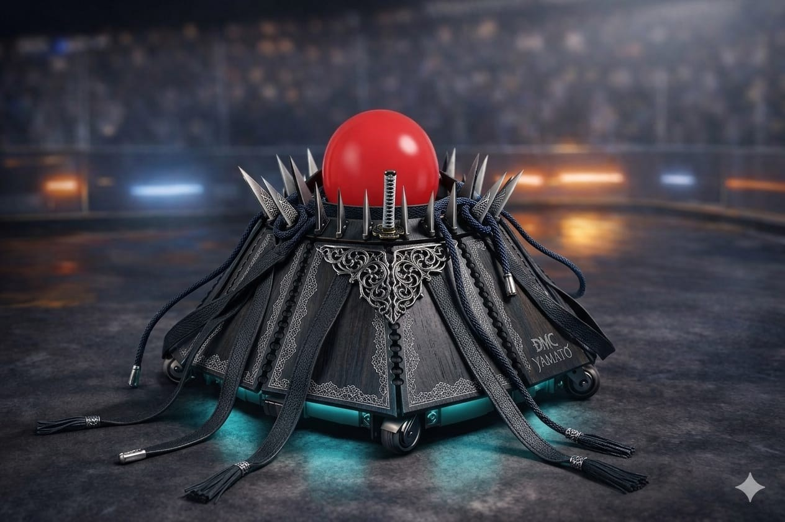
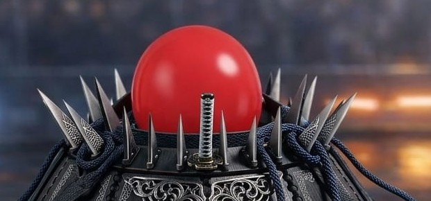
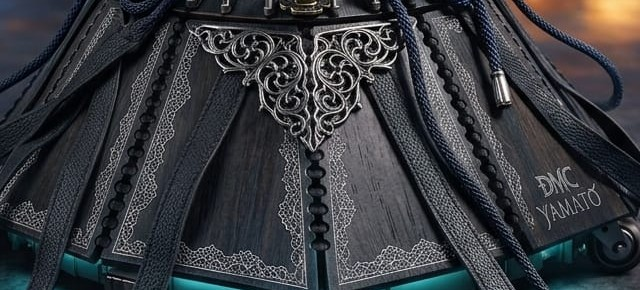
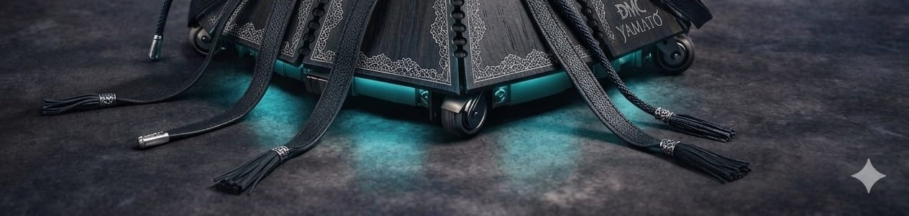
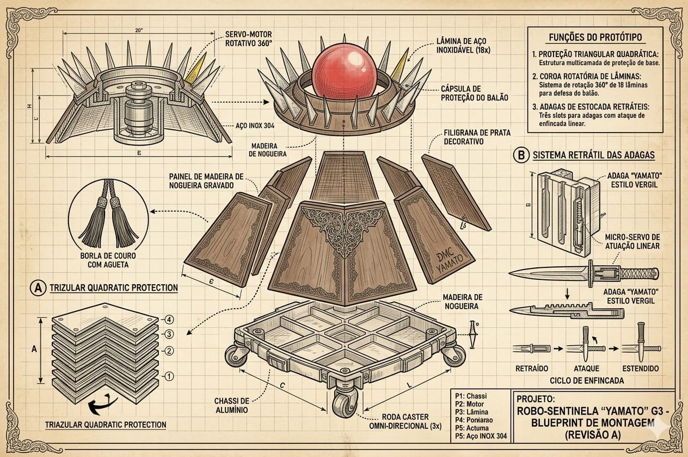
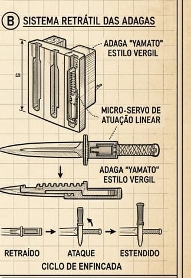
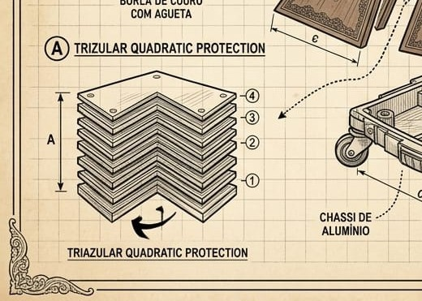

VÍDEO 01 · 30s
Bastidores da construção
Etapas da montagem do chassi, dos painéis de nogueira e da coroa de lâminas.
VERGIL é o robô sentinela que estamos construindo para a arena da RoboCup. No centro, protegida por uma coroa de lâminas giratórias, fica a esfera de núcleo — o ponto que precisa sobreviver até o fim do combate. Tudo no chassi foi desenhado em torno dessa única prioridade: defender o núcleo e abrir uma brecha no do adversário.
Todo projeto de robótica de combate começa com uma pergunta simples: o que vale a pena proteger? Decidimos que, para o VERGIL, a resposta era o núcleo — uma esfera vermelha posicionada bem no centro do chassi, envolta por uma coroa de dezoito lâminas de aço inoxidável. Se o núcleo cai, o combate acaba. Por isso construímos o robô de fora para dentro, como uma armadura que gira em torno do que realmente importa.
O nome e o estilo das lâminas são uma homenagem direta ao universo de Devil May Cry e à katana Yamato — daí os painéis de madeira de nogueira gravados, as borlas de couro e o acabamento em prata que aparecem por todo o chassi. É estética de samurai aplicada a um problema de engenharia: como manter mobilidade omnidirecional, proteção em camadas e um sistema de ataque retrátil dentro de uma base de apenas 20 polegadas de diâmetro.
O resultado é um robô que joga na defensiva por natureza. A coroa rotativa intercepta qualquer investida antes que ela chegue perto do núcleo, enquanto as três adagas retráteis — guardadas nas laterais do chassi — esperam a abertura certa para atacar o núcleo do adversário. Não é o robô mais rápido da arena. É o que erra menos.

Do render de apresentação ao blueprint de montagem: cada detalhe do VERGIL, em close.






Uma camada de defesa passiva e uma de ataque ativo, trabalhando em torno do mesmo núcleo.
Dezoito lâminas de aço inoxidável 304 ficam presas ao redor do núcleo e giram continuamente, acionadas por um servo-motor rotativo de 360°. Qualquer objeto que se aproxime do centro do robô — uma adaga adversária, um braço mecânico — encontra a coroa antes de encontrar o núcleo. É a primeira e mais constante linha de defesa do VERGIL.
Três adagas estilo Yamato ficam guardadas em slots nas laterais do chassi, acionadas por micro-servos de atuação linear. Quando o operador identifica uma abertura no adversário, a adaga avança em linha reta — um golpe de estocada rápido e preciso — e retorna imediatamente à posição retraída, protegendo a lâmina de contra-ataques.
Os componentes físicos e eletrônicos necessários para tirar o VERGIL do blueprint e colocá-lo na arena.
Base estrutural em alumínio leve, dividida em compartimentos para acomodar motor, baterias e fiação.
Motor central responsável por girar continuamente a coroa de 18 lâminas ao redor do núcleo.
Dezoito lâminas fixadas na coroa rotativa, resistentes a impacto e corrosão.
Três adagas de estocada retrátil, acopladas aos micro-servos de atuação linear.
Micro-servos responsáveis pelo ciclo retraído → ataque → estendido de cada adaga.
Painéis de madeira gravada que revestem o chassi, com filigrana decorativa em prata.
Três rodas caster distribuídas na base, garantindo deslocamento livre em qualquer direção.
Microcontrolador com Bluetooth/Wi-Fi, recebendo comandos do aplicativo de controle no celular.
Pacote de bateria recarregável e chicote elétrico que alimenta motores, servos e LEDs.
Dois vídeos curtos, hospedados no YouTube, mostrando o robô saindo do papel.
Etapas da montagem do chassi, dos painéis de nogueira e da coroa de lâminas.
VERGIL se deslocando na arena, comandado em tempo real pelo aplicativo de controle.
Integrantes responsáveis pelo projeto VERGIL para a RoboCup.